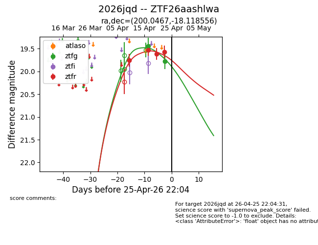
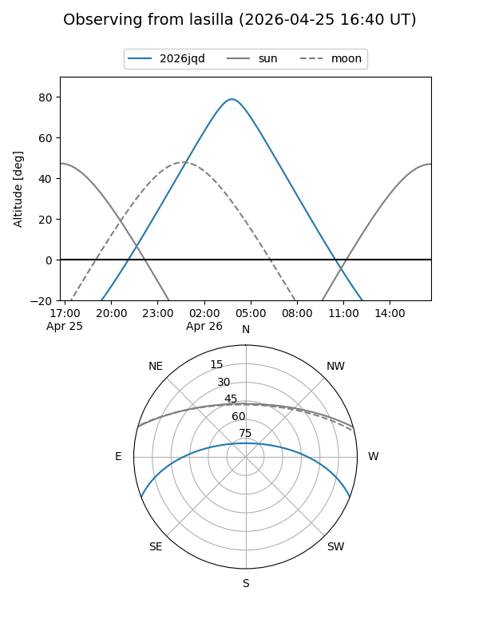
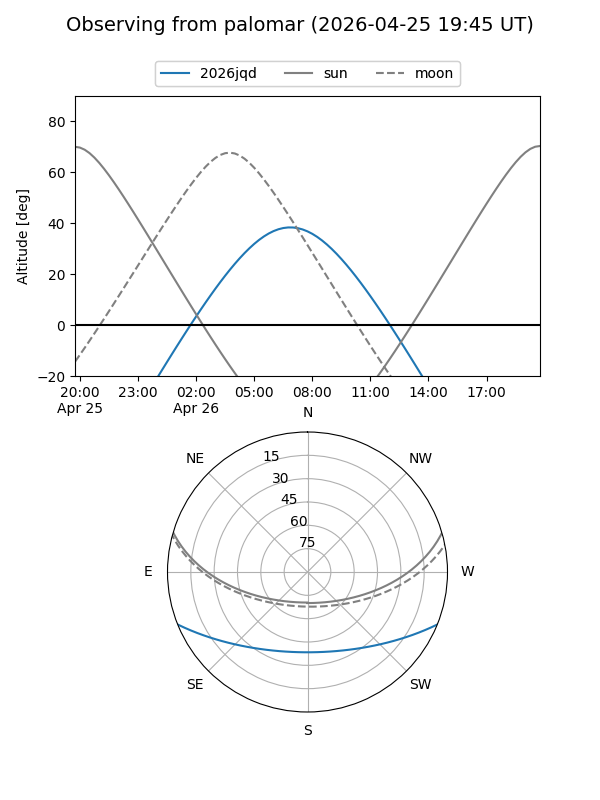
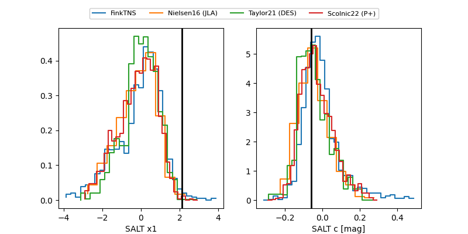

2026jqd
Target 2026jqd at 2026-04-25 22:05
Aliases and brokers:
FINK: link
Lasair: link
ALeRCE: link
TNS: link
YSE: link
alt names
ZTF26aashlwa (ztf,fink_ztf)
2026jqd (tns,yse)
Coordinates:
equatorial (ra, dec) = 200.0467,-18.11856
equatorial (HMS+DMS) = 13:20:11.21,-18:07:06.80
galactic (l, b) = (312.4824,+44.21942)
Flags:
Photometry:
last ztfg=19.78, ztfr=19.57
2 ztfg, 4 ztfr detections
Lightcurve

Visibility


Additional plots
